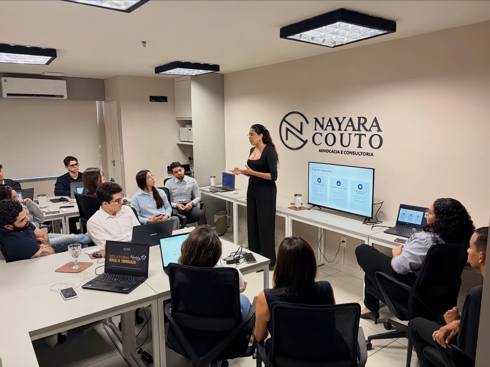
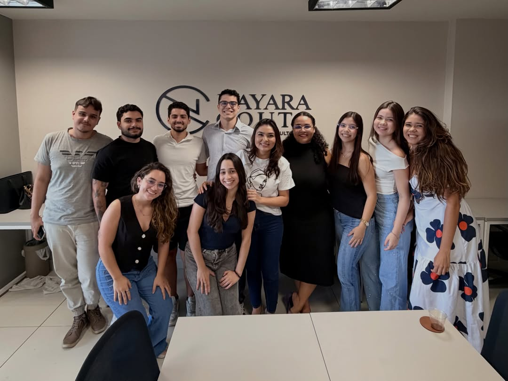

CONSULTIVA & CONTENCIOSA
Antes do problema,
uma boa orientação.
Um olhar atento para a sua história. Uma atuação jurídica pensada para as suas decisões, seus direitos e o seu negócio.

Por trás de cada demanda,
existem pessoas.
A NC Advocacia é liderada por Nayara Couto e tem sede em São Luís, no Maranhão. O escritório atua de forma consultiva e contenciosa, com atendimento em todo o Brasil.
Nosso trabalho parte da compreensão de cada contexto: o momento de uma empresa, uma relação contratual ou uma questão da vida pessoal. A partir dessa escuta, construímos uma atuação adequada à demanda.
Conheça o dia a dia da equipe
O cuidado está
nos detalhes.
Prevenir conflitos, orientar decisões e acompanhar demandas. Conheça alguns dos temas presentes na atuação do escritório.
Converse sobre sua demanda01Direito Empresarial
Orientação jurídica para as decisões e a rotina da empresa, com atenção à prevenção de conflitos, às relações comerciais e à identificação de riscos.
PREVENÇÃO E GESTÃO JURÍDICA02Direito Civil
Análise de direitos e obrigações nas relações privadas. Orientação e acompanhamento de demandas, considerando as particularidades de cada situação.
RELAÇÕES E RESPONSABILIDADES03Contratos
Análise e revisão de contratos, com atenção aos prazos, às obrigações e às responsabilidades de cada parte, desde a negociação até a execução do que foi acordado.
CLAREZA EM CADA ACORDO04Direito Imobiliário
Orientação em questões relacionadas a imóveis, negociações e contratos do setor, com atenção às demandas de pessoas, empresas e negócios da construção civil.
PATRIMÔNIO E NEGÓCIOSExperiências
compartilhadas.
O primeiro passo
é uma conversa.
Entre em contato com a equipe para informações sobre atendimento e agendamento.
Fale conosco pelo InstagramEd. Tech Office, sala 827
Ponta da Areia · São Luís, MAVer localização